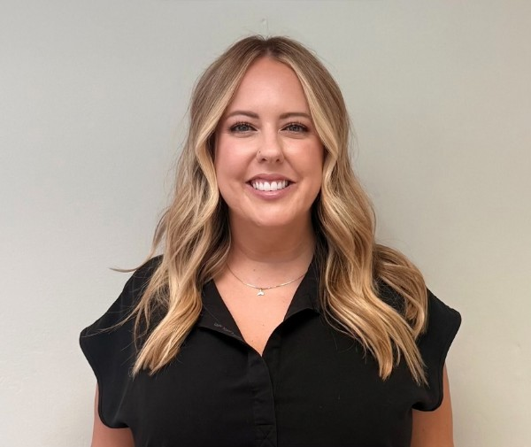

About
The Experience Behind the Recovery
15 years in dentistry. Two sides of the practice. One mission: fight for the revenue you’ve earned.

I’ve spent the past 15 years working in dentistry from both the clinical and administrative sides of the practice. I’ve worked alongside clinicians, understood the procedures behind the claims, read clinical documentation and X-rays, navigated dental billing, and learned how to challenge insurance companies when they don’t pay what a practice has earned.
That combination matters.
When an insurance company denies a claim, I’m not just looking at a billing code on a screen. I understand the dentistry behind it. I can look at the clinical documentation, understand what was done and why, and use that knowledge to build a stronger appeal.
And on the other side, my experience in dental billing has taught me how to navigate the insurance process, identify where claims are getting stuck, and confidently fight for the reimbursement a practice is entitled to pursue.
Because I know both sides of the equation, I know how to speak both languages: dentistry and insurance.
Small, independent practices work incredibly hard to care for their patients. Clinicians shouldn’t have to spend their time fighting insurance companies, deciphering denials, and chasing money they’ve already earned.
Clinicians shouldn’t have to become experts in the insurance game to get paid for the care they provide.
I’ve played the insurance game. I’ve learned how it works and mastered the rules. And now, I’m fighting for the clinicians.
Revenue Recovery Solutions was built to give independent dental practices a knowledgeable advocate in their corner—someone who understands the clinical story behind the claim and knows how to turn that story into a stronger case for reimbursement.
15 Years of Experience Across the Entire Practice
Clinical • Insurance • Operations • Revenue Recovery
Clinical Expertise
Understanding the procedures, documentation and clinical story behind the claim—including radiographs and treatment.
Insurance Expertise
PPO claims, denials, appeals, reconsiderations, insurance follow-up and documentation requirements.
Revenue Cycle
A/R management, aging reports, outstanding claims, denial trends and recovery opportunities.
Practice Operations
Front- and back-office workflows, practice systems, staff training, process improvement and team coordination.
I don’t just understand the claim. I understand the practice behind it.
Why Revenue Recovery?
Dental practices work hard to provide exceptional care. But between insurance requirements, documentation, aging claims and constantly changing payer expectations, revenue can slip through the cracks.
Revenue Recovery Solutions was created to help independent practices recover what they’ve already earned—and build systems that help prevent the same revenue from being lost again.
Let’s Recover Your Revenue